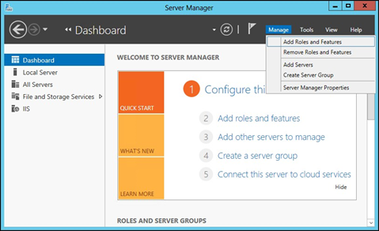
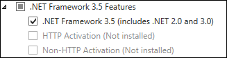
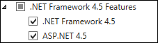

Install .NET Framework for Windows Server 2012/2012 R2
This topic provides information on the following:
Install .NET Framework 3.5 and .NET Framework 4.5
- In Server Manager, click Manage and then select Add Roles and Features to start the Add Roles and Features Wizard.

- In the Confirm Installation Selections interface, review the selections and then click Install.
- Allow the installation process to complete and then click Close.
- On the Select installation type screen, select Role-based or feature-based installation.
- Select the target server.
- On the Select Features screen, check the box next to .Net Framework 3.5 Features.

- In the Select Features interface, expand .NET Framework 3.5 Features.
- Once expanded, there will be three check boxes. One for .NET Framework 3.5 and the other two for HTTP Activation and Non-HTTP Activation. Check the box next to .NET Framework 3.5 and click Next.
Install .NET Framework 4.5: Regics Only
- In Server Manager, click Manage and then select Add Roles and Features to start the Add Roles and Features Wizard.
- On the Select installation type screen, select Role-based or feature-based installation.
- Select the target server.
- On the Select Features screen, check the box next to .Net Framework 4.5 Features.
- In the Select Features interface, expand .NET Framework 4.5 Features.
- Once expanded, there will be three check boxes. These will be .NET Framework 4.5, APS.NET 4.5 and WCF Services. Check the boxes next to .NET Framework 4.5 and ASP.NET 4.5 then click Next.

- In the Confirm Installation Selections interface, review the selections and then click Install.
- Allow the installation process to complete and then click Close.